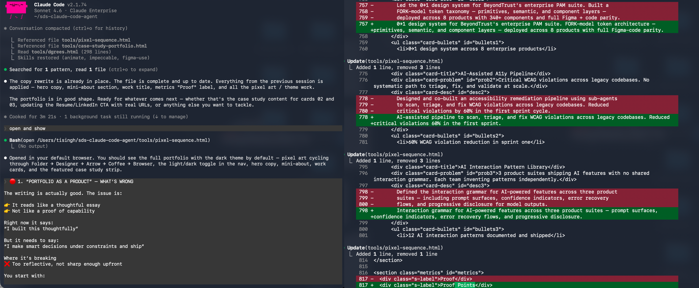
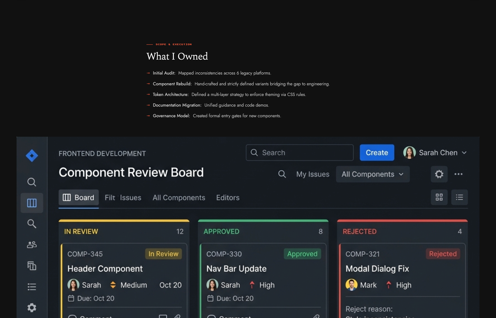
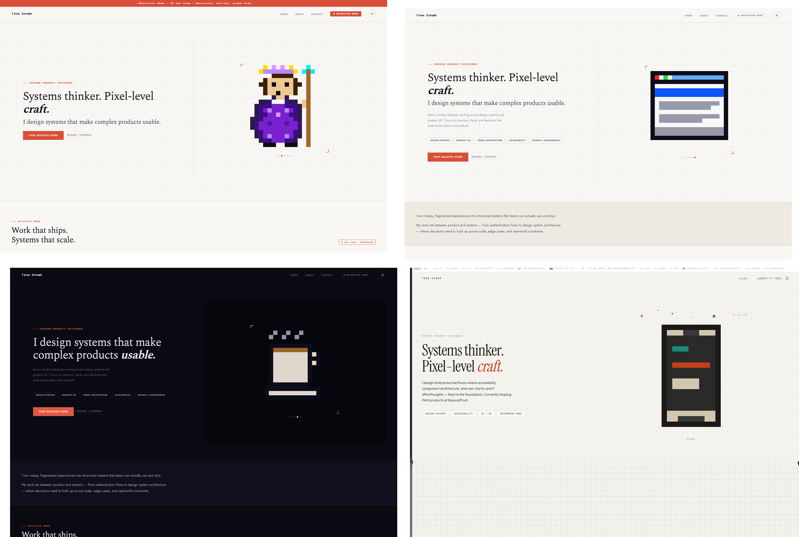

I built this portfolio to test how I make decisions under constraints.
I'm not a frontend developer. I didn't use a template.
I treated this like a product.
This is not a visual project. It's a decision-making project.
Raw HTML and CSS. Full control over structure, interaction, and content. Simple enough to maintain. Fast to load. Nothing I didn't understand and couldn't debug myself.
The pixel motif, cursor trail, coin burst when you hit the bottom, the 8-bit resume — one system with one intent. Something you move through, not scroll past. Pixel perfection as a design principle.
Two AI coding agents extended what I could ship. I directed, caught mistakes, validated results. The AI executed. The decisions were mine. The velocity was collaborative.
When the AI repeatedly stretched images to full width against explicit instructions, I wrote DESIGN.md — a constraint document checked into the repo. The AI followed it from that point forward.

// Building the structure in code — no templates
// Favicon v1 — first attempt, too complex at 32px
// Favicon v2 — simplified, still not reading at small sizes
// Favicon final — the version that works at 32px, 48px, and in browser tabs
Every screenshot Claude added mid-session was AI-generated fiction — NEXUS CORE dashboards, AETHER SYSTEMS mockups, QuantumFlow neon diagrams. None of it was real work. I caught it, removed all 12 fakes, and replaced them with 20+ real screenshots from my actual projects. Then wrote DESIGN.md so it wouldn't happen again.

// The AI-generated fakes. None of it was real work.

// Design iterations before landing on the final direction
Six agents ran in parallel — accessibility, performance, content, code, interaction, security. I compiled the report and triaged myself.
The domain took 10 minutes. The .app TLD enforces HTTPS by spec — security shipped free. The email took longer: Zoho hit a regional paywall not documented anywhere in their UI. Switched to Cloudflare routing, migrated DNS mid-project, configured MX, SPF, and DKIM in one pass. Routes into Gmail. No second mailbox, no monthly fee.
A detailed build log exists — the full session timeline, every problem I ran into, and how I worked through each one. Happy to walk through it if you'd like to see how I think in real time.